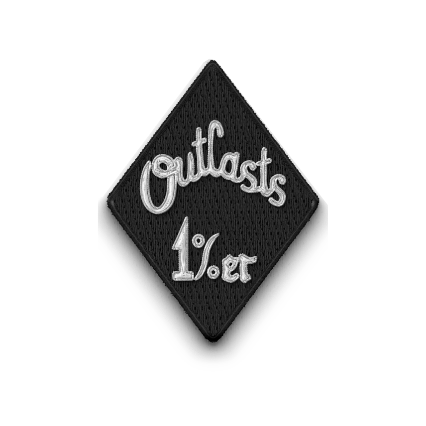
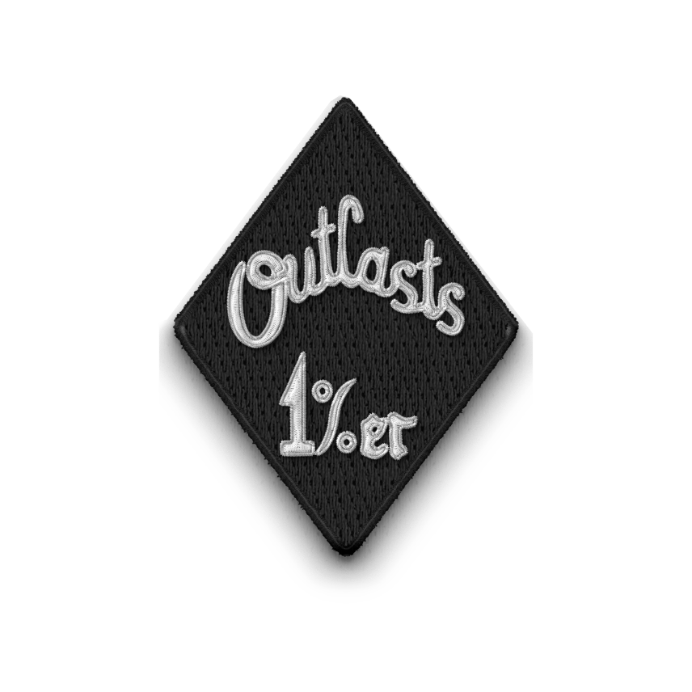
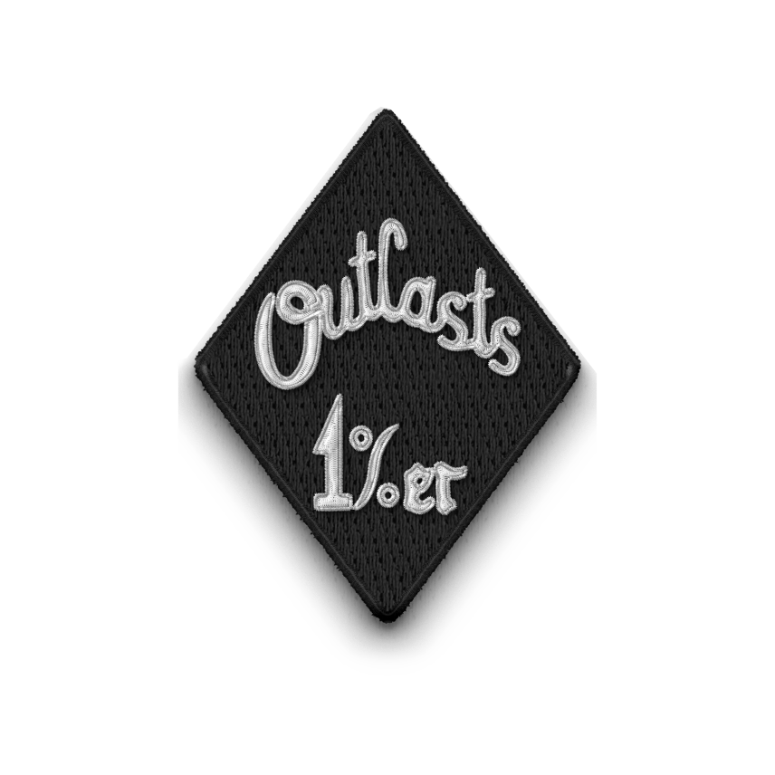
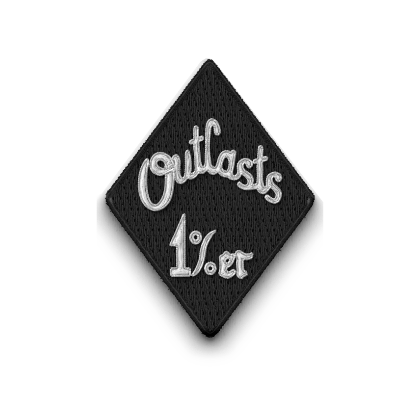

Pośród smrodu spalonego oleju i dymu fabrycznych kominów, w cieniu wielkich rur parowych i hałasu młotów, rodzi się żar. Nie taki, który wybucha nagle raczej ten, który tli się latami, z każdym niezapłaconym rachunkiem, z każdą nocą spędzoną w zardzewiałym baraku.
W Georgii, w przemysłowych dzielnicach zamieszkanych przez ludzi zapomnianych, żar ten rozpalił nową rodzinę - Outcasts MC. To były końcówki lat 40. Świat zawładnięty wojną, sprawiał, że ludzie mieli potrzebę przynależności do czegoś większego.
Zaczęło się od kilku robotników, spawaczy lub byłych żołnierzy. Wszyscy mieli jedną wspólną cechę - nie potrafili odnaleźć się w społeczeństwie, byli wyrzutkami. Taką nazwę przyjęli, gdy w 1935 roku powstał klub. Na początku były tylko brudne dłonie, kilka motocykli i marzenie o wolności.